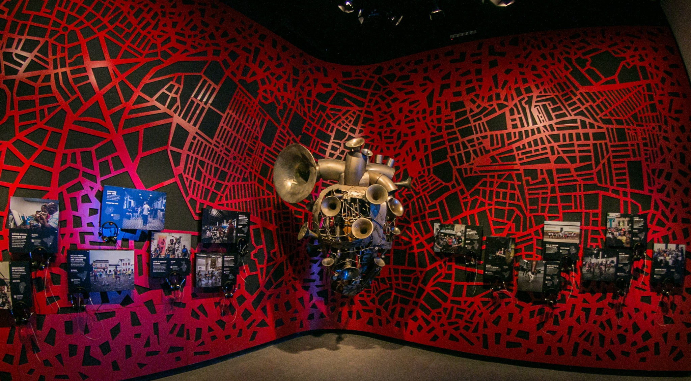

Recife velho: outras atrações
Centro Cultural Cais do Sertão

O Centro Cultural Cais do Sertão, localizado em Recife, é uma homenagem à cultura do sertão nordestino, inaugurado em 2014. Com uma arquitetura moderna e inovadora, projetada por Marcelo Ferraz, o centro combina elementos tradicionais e contemporâneos para criar uma experiência imersiva e interativa. O acervo inclui exposições multimídia que destacam a vida, a música e a cultura do sertanejo, com um foco especial em Luiz Gonzaga, o Rei do Baião.
Além das exposições permanentes, o Cais do Sertão oferece oficinas, shows, palestras e atividades educativas, promovendo a participação da comunidade e valorizando as tradições nordestinas. Este espaço cultural tem se tornado um ponto de encontro importante para artistas, pesquisadores e turistas, contribuindo para a preservação e promoção da cultura do sertão.
Aberto de terça a domingo, o Cais do Sertão é um convite para explorar e apreciar a rica herança cultural do Nordeste brasileiro.
Museu Paço do Frevo
O Museu do Frevo, situado no coração do Recife, é uma celebração vibrante da dança e música que são símbolos culturais de Pernambuco. Inaugurado em 2014, o museu está localizado no bairro do Recife Antigo, em um edifício histórico que combina elementos arquitetônicos tradicionais com modernos espaços expositivos.
O museu oferece uma experiência interativa e educativa, com exposições que exploram a história, os personagens e os ritmos do frevo. Através de recursos multimídia, os visitantes podem aprender sobre as origens do frevo, suas influências culturais e sua evolução ao longo do tempo. O acervo inclui partituras, fotografias, vídeos e trajes típicos, além de contar com a presença de mestres e artistas que perpetuam essa tradição.
Além das exposições permanentes, o Museu do Frevo promove oficinas, shows, aulas de dança e palestras, incentivando a participação da comunidade e a valorização dessa importante manifestação cultural. O espaço é um ponto de encontro para músicos, dançarinos, pesquisadores e turistas, contribuindo para a preservação e disseminação do frevo.
Aberto ao público de terça a domingo, o Museu do Frevo é um destino imperdível para quem deseja se conectar com a energia e a alegria do frevo, patrimônio imaterial da humanidade.